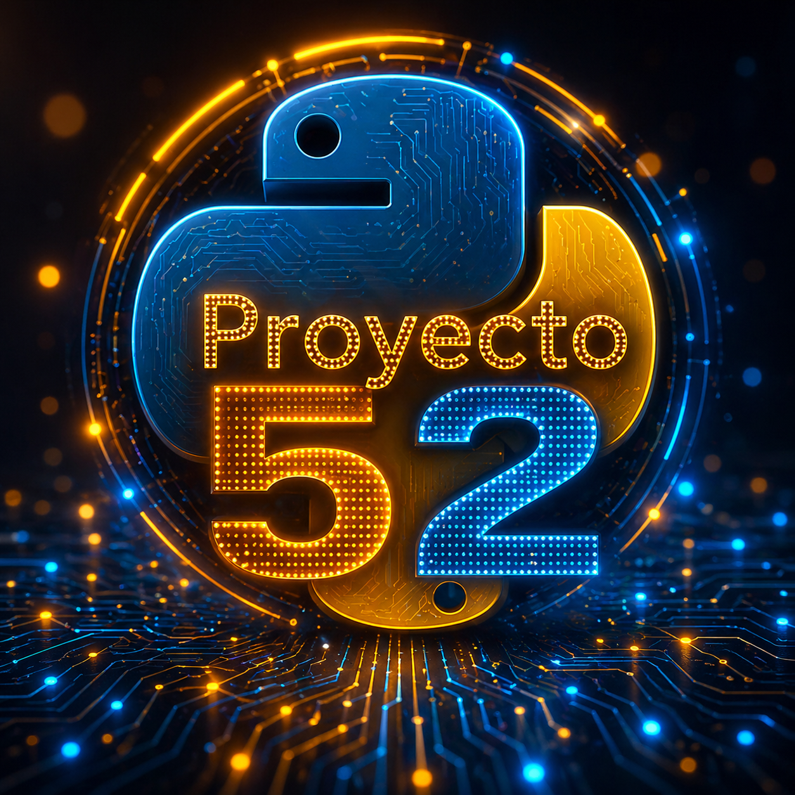

Pruebas de Hipótesis y Significancia Estadística
¿Una diferencia es realmente importante o apareció por casualidad? Descubre cómo pensar los resultados con criterio estadístico.
27 de octubre de 2026 · Newsletter Proyecto 52 Leer esta edición ↗
Proyecto 52Proyecto 52 es un recorrido educativo diseñado para entender cómo los datos se convierten en conocimiento, modelos, decisiones y soluciones inteligentes.
Aprende con una ruta clara: SQL, Python, analítica, minería de datos, machine learning, deep learning, PLN, transformers, agentes inteligentes y toma de decisiones.
Esta semana seguimos avanzando en el Capítulo 11, entrando de lleno al procesamiento de imágenes con OpenCV: cómo utilizar Python para cargar, visualizar, transformar y analizar fotografías mediante operaciones sobre sus píxeles. Después de conocer los fundamentos de la Visión por Computadora, llegó el momento de poner manos a la obra, trabajando con redimensionamiento, recortes, rotaciones, espacios de color, brillo y contraste. También exploraremos cómo mejorar imágenes utilizando filtros digitales, reducir ruido, detectar bordes con Sobel y Canny, identificar contornos y reconocer formas geométricas mediante segmentación. Y como siempre, no nos quedaremos solamente en la teoría: desarrollaremos un proyecto práctico capaz de identificar objetos por su color y forma utilizando Python y OpenCV. Porque ahora que sabemos cómo una computadora representa una imagen, viene lo más interesante: ¿qué podemos hacer con esos píxeles para convertirlos en información útil?
Cada episodio suma una pieza más a esta ruta de aprendizaje continuo en datos, analítica e inteligencia artificial.
Cómo identificar y localizar objetos dentro de imágenes utilizando técnicas de detección y segmentación, delimitando regiones de interés y explorando cómo la Visión por Computadora permite reconocer y separar elementos de una escena.
Cómo cargar, transformar y procesar imágenes con OpenCV, aplicando operaciones como filtros, ajustes de color, bordes y otras técnicas fundamentales para preparar y analizar información visual.
RecomendadoCómo las máquinas pueden interpretar imágenes y videos, identificar patrones, reconocer objetos y transformar información visual en datos útiles mediante Visión por Computadora.
Proyecto 52 nace con una idea simple: compartir conocimiento de datos e inteligencia artificial de forma constante, práctica y entendible. Cada episodio conecta teoría, ejemplos y aplicaciones reales para que más profesionales puedan comprender el valor de los datos.
La meta no es solo aprender herramientas, sino desarrollar criterio para tomar mejores decisiones con datos.
Conecta conmigo en LinkedIn →Recorre la ruta completa de Proyecto 52, desde los fundamentos de los datos hasta la inteligencia artificial. Cada capítulo agrupa una etapa del aprendizaje y te lleva directamente a su playlist en YouTube.
Fundamentos de bases de datos, conceptos esenciales, introducción a SQL y primeros pasos para analizar información.
02Consultas avanzadas, transacciones, integridad de datos, optimización básica y fundamentos de bases de datos NoSQL.
03Programación aplicada al análisis de datos usando Python, Pandas y R para limpiar, transformar y explorar información.
04Conceptos estadísticos clave para interpretar datos, medir patrones, analizar variabilidad y tomar mejores decisiones.
05Procesos, pipelines, integración, transformación y preparación de datos para construir soluciones analíticas confiables.
06Introducción al aprendizaje automático, modelos supervisados y no supervisados, entrenamiento, evaluación y predicción.
07Árboles de decisión, clustering, modelos de ensamble y técnicas avanzadas para mejorar el desempeño predictivo.
08Fundamentos de redes neuronales, entrenamiento profundo, CNN, RNN y arquitecturas modernas aplicadas a datos complejos.
09Análisis de texto, embeddings, modelos de lenguaje, transformers, BERT y evolución hacia los LLMs modernos.
10Fundamentos, agentes inteligentes, toma de decisiones y aplicaciones reales.
11Píxeles, procesamiento de imágenes, detección, segmentación y aplicaciones inteligentes.
12Reinforcement Learning, Q-Learning, Deep Q-Learning, GANs e Inteligencia Artificial Explicable.
13Finanzas, medicina, biotecnología, logística, automatización y creación de soluciones integrales con IA.
No todos llegan con el mismo nivel. Por eso la ruta puede recorrerse desde diferentes puntos.
De dónde vienen, cómo se organizan y por qué son la materia prima de la IA.
Uso de SQL, Python, R y visualización para convertir datos en información.
Aplicación de machine learning y deep learning para resolver problemas reales.
IA generativa, agentes, automatización y toma de decisiones basada en datos.
Una versión organizada del proyecto con explicaciones, ejemplos, ejercicios y recursos complementarios.
“Una forma clara de entender temas que muchas veces parecen complicados.”
Comunidad Proyecto 52“Cada episodio conecta teoría, práctica y criterio para usar mejor los datos.”
Aprendizaje continuo“Un espacio para aprender datos e inteligencia artificial sin perderse en tecnicismos.”
Datos para todosConecta con la comunidad del Proyecto 52 y recibe avisos, recursos, episodios y novedades desde el canal que prefieras.
Recorre las 13 casas del conocimiento, completa misiones y desbloquea tu camino desde las bases de datos hasta la inteligencia artificial.
Cada casa representa un capítulo del Proyecto 52. Mira los episodios, responde retos y avanza como Caballero de los Datos.
Jugar ahoraExplora la galería del Proyecto 52: un espacio visual para revivir episodios, descubrir recursos y seguir la evolución de esta ruta desde los datos hasta la inteligencia artificial..